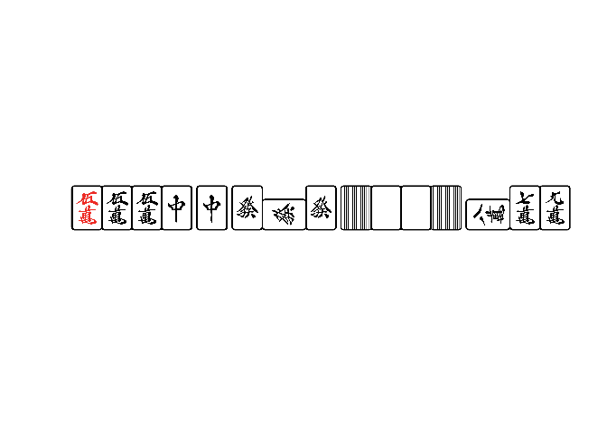

shikakusphere is a collection of miscellaneous funcitons for Japanese mahjong that wraps C++ sources of cmajiang.
The name “shikakusphere” is a compound word of “shikaku” + “sphere”. “shikaku” means “square” in Japanese. It comes from “Shikakui Uchuu De Matteru Yo”, which is the third ED of the anime “Saki”, and sounds exactly like mahjong games.
Installation
You can install the development version of shikakusphere from GitHub with:
# install.packages("pak")
pak::pak("paithiov909/shikakusphere")Example
手牌（hands）はkobalab/majiang-coreの記法で表現する。
参考
- 牌 · kobalab/majiang-core Wiki
- 面子 · kobalab/majiang-core Wiki
- 牌姿 · kobalab/majiang-core Wiki
- 電脳麻将のプログラム中の中国語一覧 - koba::blog
hands <- c(
"p222345z1234567",
"p11222345z12345",
"m055z7z7,m78-9,z5555,z666=",
"m123p055s789z1117*"
)
# シャンテン数
n_xiangting <- calc_xiangting(hands)
n_xiangting
#> [1] 4 3 -1 0
# 有効牌（シャンテン数が減る牌）
collect_tingpai(hands[n_xiangting >= 0])
#> [[1]]
#> [1] "z1" "z2" "z3" "z4" "z5" "z6" "z7"
#>
#> [[2]]
#> [1] "p1" "z1" "z2" "z3" "z4" "z5"
#>
#> [[3]]
#> [1] "z7"
# 得点. この関数はvectorizeされていないので注意！
# baopaiはドラ表示牌、libaopaiは裏ドラ表示牌
score <- calc_defen(hands[n_xiangting == -1][1], baopai = "z1")
score
#> shoupai hupai fu fanshu damanguan defen menfeng
#> 1 m055z7z7,m78-9,z5555,z666= 8,9,34,35,12 70 7 0 12000 1
# ロン和了のときはこんなふうに書く
calc_defen("m345567p234s3378", baopai = "z1", rongpai = "s9=")
#> shoupai hupai fu fanshu damanguan defen menfeng
#> 1 m345567p234s3378s9= 22 30 1 0 1000 1
# あがり役の表示
parse_hupai(score$hupai, "jp")
#> [[1]]
#> [1] 翻牌 白 翻牌 發 小三元 混一色 赤ドラ
#> 54 Levels: 場風 東 場風 南 場風 西 場風 北 自風 東 自風 南 自風 西 ... 地和
# 牌姿を表示する
hand2img(score$shoupai[1])
License
MIT license. This package contains modified code based on the tinyxml2.